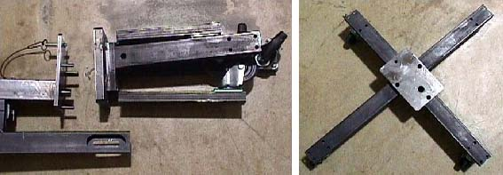

The stand has a large stud and 3 smaller studs that engage the base assembly.
The large stud provides stability.
The three small studs engage the base arms preventing them from folding under if accidentally tipped.
The Locking pin engages the 4th base arm and prevents accidental separation when assembled.
Illustration 1: Front Cover Dolly Base and Stand Disassembled
